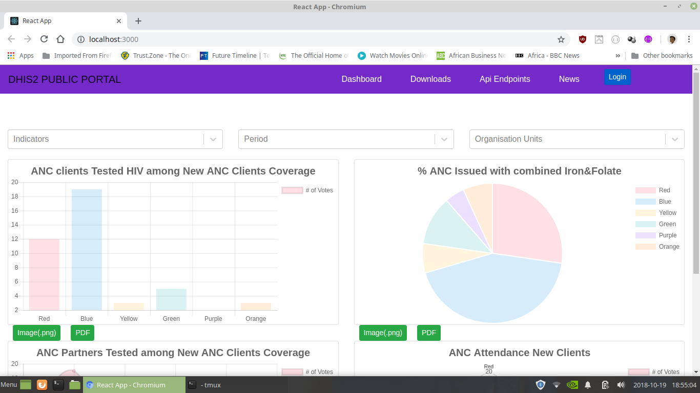
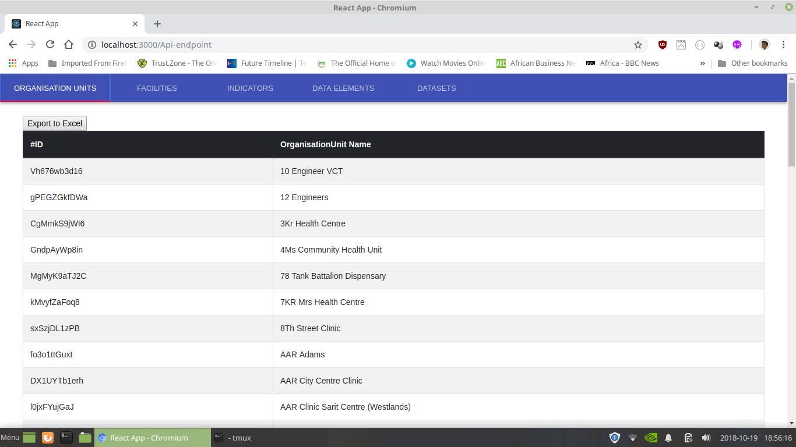

Public web Portal Documentation¶
Chapter 1¶
Problem Statement¶
Dhis2 has played an important role in data collection and analysis in kenya.However the information collected by dhis2 is not available to the public and therefore public awareness of health information is limited. Since the health sector has devolved it is necessary to give the various organisation units(Counties ) a dashboard where they can be able to display the information they would choose to the public ie give them a configurable portal.
Here is some text explaining some very complicated stuff.:
Objectives¶
Design and develop a web portal that :
- Will help the public have access to DHIS2 aggregate data via the portal.
-Based on organization unit
-Period
-indicators
Public can be able to download various health reports and also be able to receive news alerts.
County officers will be able to log in and select the various dashboard from dhis2.
Chapter 2¶
Starting page¶
” This is where the user will start at when the application is initialised.
Where he will have different options to choose from in the navigation area.
On the dashboard is where we have all the stored dashboard by the user.
Downloads this where a user can be able to download any content that is
publicly avaiable for download from the DHIS2 application. This can
easily reduce the user barden of having to know how to use DHIS2 application
which may seem difficulty for a user who does not know how to interact with
DHIS2 web app. “
API Endpoints¶
Api Endpoints this is where a technical or a user from the public may want to
come and export data in various formats such as excel which can be handy if
you want to do some modification of the data to fit you. For instance, the
press can easly come to this page and collect data for their report.
News¶
News page is a page where will be delivering news according to our reports.